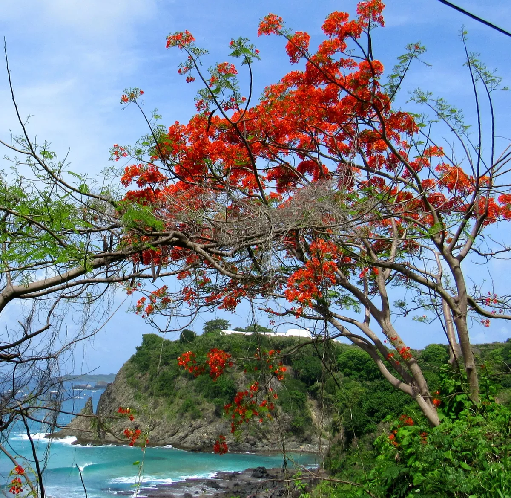
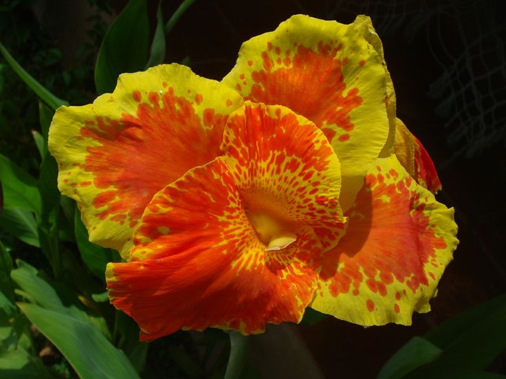
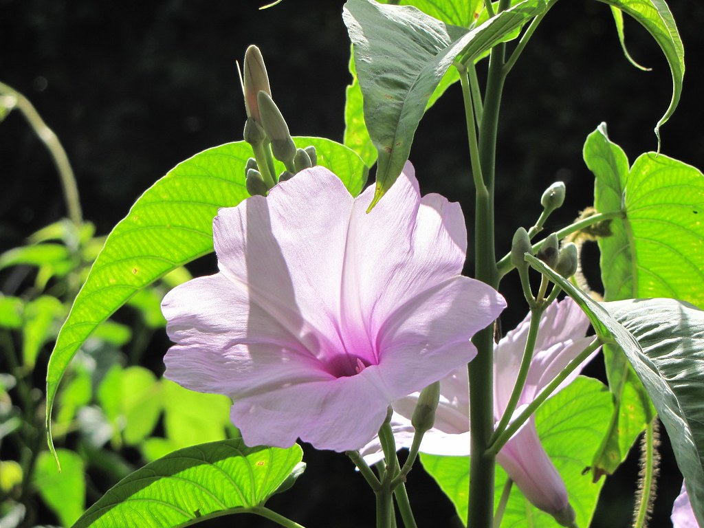

Flora de Fernando de Noronha
A flora de Fernando de Noronha é bastante rica e adaptada às condições climáticas do arquipélago. Devido ao clima tropical e ao isolamento geográfico das ilhas, diversas espécies vegetais desenvolveram características próprias, formando um ambiente natural único.
A vegetação é composta principalmente por árvores de pequeno porte, arbustos, gramíneas e plantas resistentes aos períodos de seca. Entre as espécies mais conhecidas estão o mulungu, a gameleira, o ipê e diversas plantas nativas que ajudam a manter o equilíbrio ecológico da região.
Fernando de Noronha também possui espécies endêmicas, ou seja, plantas que são encontradas apenas no arquipélago. Essas espécies têm grande importância científica e ambiental, pois contribuem para a biodiversidade local.
A preservação da flora é fundamental para a manutenção dos ecossistemas da ilha. Por isso, grande parte do território está protegida pelo Parque Nacional Marinho de Fernando de Noronha, que promove a conservação da vegetação e dos habitats naturais.
Além de sua importância ambiental, a flora contribui para a beleza das paisagens de Fernando de Noronha, tornando o arquipélago um dos lugares mais encantadores do Brasil. A combinação entre vegetação, praias e vida marinha cria um cenário único que atrai turistas e pesquisadores de diversas partes do mundo.
Espécies nativas e endêmicas:
Fernando de Noronha possui plantas nativas e algumas espécies endêmicas, ou seja, que só existem no arquipélago. Essas espécies são importantes para os estudos científicos e para a conservação da biodiversidade local.Adaptação ao clima
A vegetação da ilha é adaptada ao clima tropical, com períodos de seca e chuvas. Muitas plantas possuem raízes profundas e folhas resistentes para economizar água.Importância ecológica
A flora desempenha um papel fundamental na proteção do solo contra a erosão, na oferta de abrigo para animais e na manutenção do equilíbrio ambiental do arquipélago.Relação com a fauna
Muitas aves, insetos e outros animais dependem da vegetação para alimentação e reprodução. A flora e a fauna trabalham juntas para manter os ecossistemas da ilha saudáveis.Preservação ambiental
Por fazer parte de uma área protegida, a flora de Fernando de Noronha recebe atenção especial dos órgãos ambientais. A conservação das plantas ajuda a preservar toda a biodiversidade local.A flora de Fernando de Noronha é um dos elementos que tornam o arquipélago tão especial. Suas plantas são adaptadas às condições climáticas da região e desempenham um papel importante na preservação do meio ambiente. Além de contribuir para a beleza natural da ilha, a vegetação protege o solo, serve de abrigo para diversas espécies de animais e ajuda a manter o equilíbrio ecológico. A conservação da flora é essencial para garantir que as futuras gerações possam conhecer e admirar esse patrimônio natural brasileiro.

